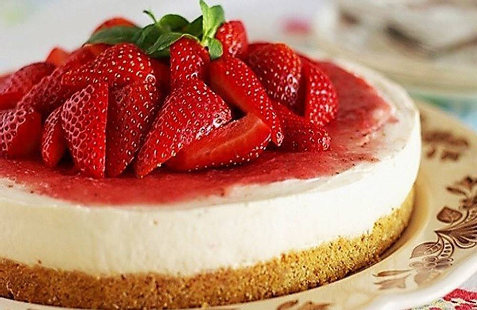

Cheesecake de Morango
Tempo de preparo: 50 minutos
Utensílios: forma e liquidificador

Ingredientes
- 1 pacote de biscoito maisena
- 1/2 xícara de açúcar
- 100 g de manteiga ou margarina
- 400 g de cream cheese
- 1 lata de leite condensado
- 3 ovos
- 230 g de geleia de morango
Modo de preparo
- Bata o biscoito no liquidificador até formar uma farinha.
- Misture o açúcar e a manteiga até formar uma farofa.
- Coloque a mistura no fundo de uma forma desmontável e pressione bem.
- Bata o cream cheese, o leite condensado e os ovos no liquidificador.
- Coloque o creme sobre a massa e acrescente a geleia de morango.
- Leve ao forno médio por aproximadamente 30 minutos.